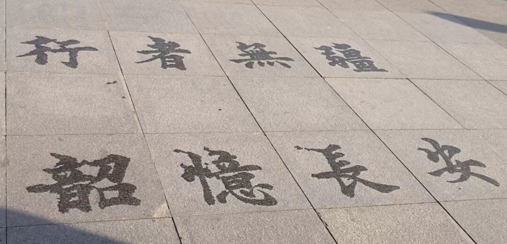
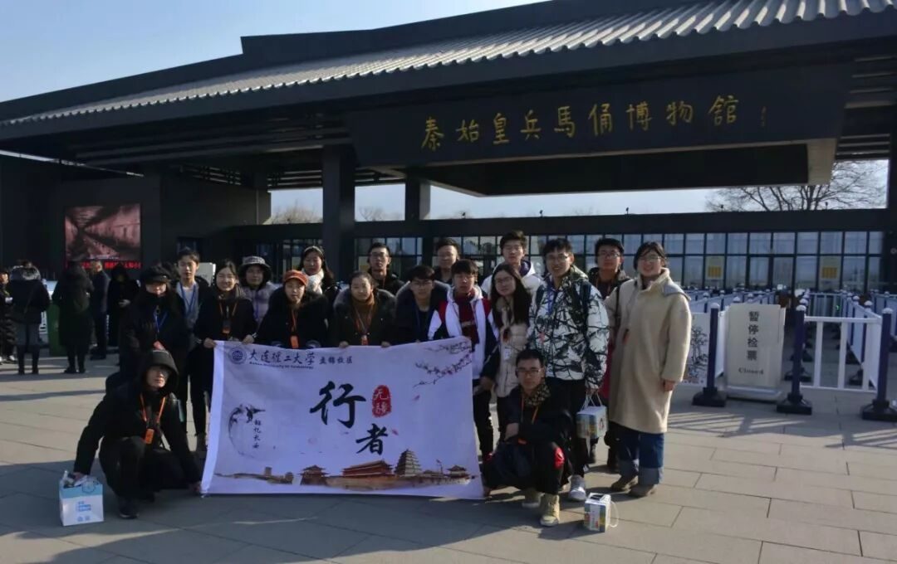
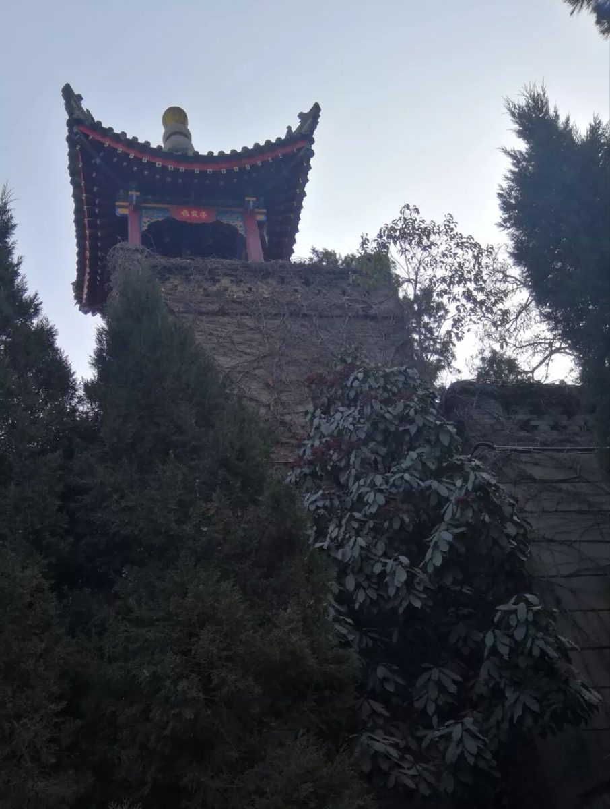
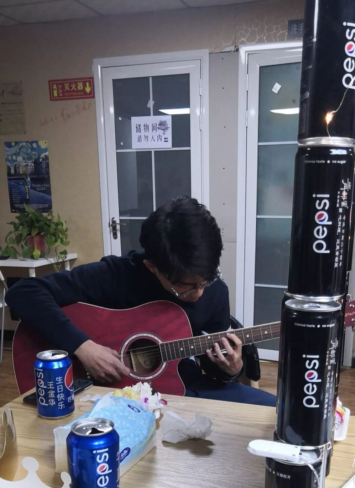

【秦简拓语·七】行万里路是最好的成长

“行者无疆”让我想起的了那句耳熟能详的俗语：“读万卷书不如行万里路”。这一路，能体会到不同于冷冰冰的书本和屏幕上的东西。是那可触可感，有温度的文化盛宴；更是大家一路互帮互助，让人落泪的感动瞬间。

在参加到行者无疆这个实践团的之前，我被“行者无疆”这个名字所吸引，行者无疆，思者无域，这都触动了我心里的那根弦，让我选择走上了行者的这条路，去往古秦旧都，前唐盛地。
“行”在路上
在我的最一开始的印象中行者无疆应该其他的实践团队相差无几。但在慢慢的相处和实践过程中，我才发现：行者无疆是一个能干实事，有情操，有一种真正感染你的力量—这种力量让你不断的去成长，让你能认识到真正的行者的精神，并教会你如何实践与思考。
大家做每一份工作都是尽心尽力，每天都会熬到半夜一两点，早上还得早起。如果是其他的社会实践团，是否能这样为了所调研的内容付出？是否能把自己做的调研项目，认真落实每一个环节都做到天衣无缝？可能他们的出发点只是单纯的为了评社会实践的奖项，他们真的能明白社会实践的真正含义吗？是否有一种类似“行者”的精神去支持他们吗？恐怕能做到像行者无疆这样的实践团少之又少。
最后就算我们没有评奖，就算我们最后没有任何所得，但我们在大家的心目中留下了文物保护的理念和意识。我就可以很自豪的说：“我不虚此行。”这一路也让我认识到了如何去思考，如何去看待一件事物。我的所闻所见，也更让我觉得文物遗址保护的重要性。

书法圣地碑林中，有人在珍贵的碑文上刻下到此一游的痕迹，是多么的让人痛心。在大雁塔的墙壁上刻下自己的名字，如此煞风景的行为，又是多么的让人感到痛心。如今文物保护的难度越来越难，政府面临城市发展和文物保护的两难局面，参观文物遗址游客又没有足够的认识。 所以现在需要的是我们行者无疆这样的实践团，这样的大学生，为文物遗址，保护发声，让更多的人能意识到这些老祖宗留下的文物遗址，背后所蕴含的东西，让大家能发自内心的去保护文物遗址，而不是靠，媒体曝光或是政府的罚款。别让下一代缺少了这般的文化传承。

“行”在心中

初到西安，这座充满了陌生感的城市让我感到又新奇，又担忧。我是否能做好我自己的工作呢，我又是否能融入大家的集体呢？我怀着惴惴不安的心思踏上了这片土地。尽管之前自己做了很多工作，却在一开始由于粗心耽误了大家不少的时间。我感到很愧疚，却又没有什么办法能做到尽善尽美，一时间产生了一些自暴自弃的情绪。在之后的旅途中大家却并没有因为我的失误而讨厌我，反而是很耐心的去开导我。不论是队长给我的建议和支持，还是大家在我最想放弃时给我的支持和鼓励，都让我铭记在心，收获了成长。

最让我感动的一件事是在行程的第一天，那天是我的生日，我其实并没有准备给自己过一个生日，在身边没有朋友，也没有家人，只能自己给自己买一个小蛋糕，象征性的给自己过一个生日。令我万万没有想到的是，队长给我和王金华，秘密准备了一个，特别的生日party，让我感觉到行者无疆，是一个有温度有情怀的团队，大家都是值得相交的挚友。仅仅是自己不经意的一句话，却让大家能记在心里，让我看到了不一样的行者无疆。

行者无疆，在行者的路上会越走越远。

来源丨行者无疆实践团
文字丨刘普昕
排版丨牛直达
审核丨潘雯雯 邓子孚
行者无疆实践团
QQ：2758025831

随行者一起认识世界
长按二维码关注